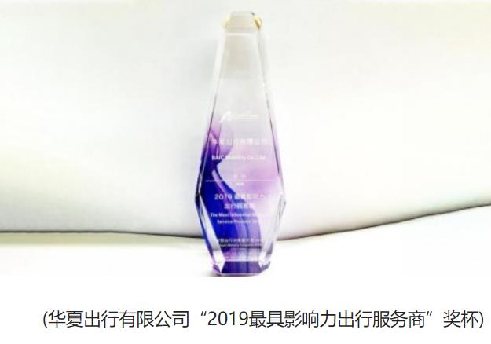

领导简介
杨立蒙，汉族，浙江杭州人，现任舍特科技有限公司总经理。他秉承独有的艰苦奋斗的老虎钳创业精神，以“创新、责任、务实”为纲领，用行动来证明自己是一个干拼敢闯的人，现有三家公司。
打造出行共享经济新生态

共享出行领域早已成为硝烟四起的战场，但无论是从培育经济增长新动能，推进汽车产业转型升级，还是满足消费者被抑制的巨大的潜在需求来看，共享汽车行业在后汽车市场的作用远未充分得到释放，抢占未来的出行市场以及由此带来的数据和流量入口成为众企业当下最关注的问题，而出行行业和人工智能技术的相互促进，打造智慧出行的产业理念，则被岳殿伟为代表的业内人士一致认为是未来致胜的法宝。当出行产业发展为人工智能技术的创新应用提供了丰富的场景，人工智能技术则成为共享汽车商业模式创新的重要支撑，出行行业将是智能化技术、交通制度和汽车行业组合式的创新方式，能够大幅降低交易成本，提升资源配置效率。
目前，华夏出行旗下分时租赁品牌“摩范出行“已经构建起了以华北、华东、华中、华南、西南五大区域为核心，全面覆盖北京、天津、河北、福建、湖北、广州、重庆、四川等20余个省、直辖市、自治区的业务规模，在全国48个城市运营，累计布局4万辆车，注册会员达380万。下一步“摩范出行”将以已有城市及卫星城为基础，由点到面铺开，辐射周边二、三线城市的“摩范出行网”，实现区域联动及各区域各城市间的异地还车和智慧调度。
交通建设大事记
一： 2018年，在区委、区政府的正确领导下，区交通运输局以建设现代化中等规模生态之城为目标，紧扣建设枢纽型网络城市主题，主动对接粤港澳大湾区建设战略，提前谋划，扎实推进交通领域的各项工作。
二：2018年，我区加快推进各项交通基础设施建设，打造外联内畅的综合交通网络体系，稳步推进高快速路等骨架路网规划建设，增强和深圳、东莞、惠州、黄埔等周边市、区的互联互通。
三：5月28日，广汕路北绕线光辉大桥段正式开工建设。
四：7月10日，荔三公路（广汕公路至广惠高速段）完成立项。
五：9月13日，朱石公路（石滩段）完成立项。